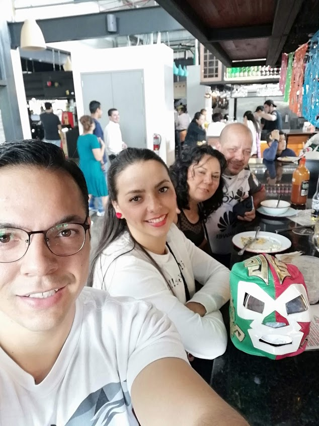

Well, to start I have to say that I was borned on August 3rd, 1994 in the afternoon,
I'm the second child they had, my daughter Debbie is 3 years older than me and
basically she took care of me the same way my dads did it. She was my best friend for
a long time, most of the time joking at me and bothering for her own benefit, but at
the end she loved me so much.
My parents were quite good with me (I have to say that my mom a bit more), they made
me grow happy and giving me the best education they could afford with their wages.
My mom, Rosella, is a women originary from Guanacaste province, since my dad is
originary from San Jose province, they met for the first time because of my aunt
Anabelle (from my mom's family), got married with a brother of an aunt of my dad,
German, they all lived together in a kind of private family neighborhood from German's
side. Then my dad came to visit sometimes his aunt and then the magic came up when my
dad finally met my mom in that neighborhood, 18 years old was my dad, 20 years old my
mom, a beauty curly-haired woman that soon fell in love with a green-eyed man. And yup,
non of us inherited their good qualities XD
